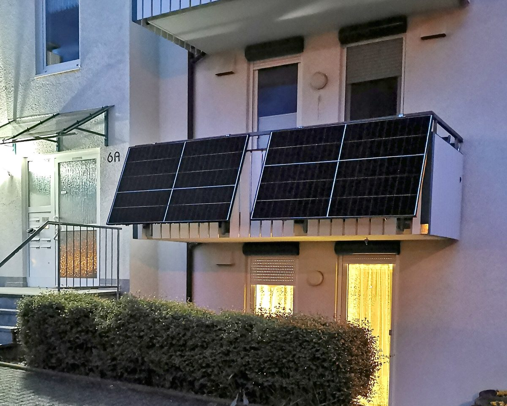

정부 베란다 태양광 10만 가구 보급에 LH 불참…서울 대단지 절반도 설치 막아

국비 375억 원 사업 참여 요청에 LH 추진계획 없다 회신, 안전·유지관리·발전량 차이 들어 옥상형 고수…태양광 없는 LH 임대주택 466개 단지 38만190가구, 보급사업 국비 지원율은 47%에서 17%로
정부가 국비 375억 원을 들여 추진하는 베란다 태양광 10만 가구 보급사업에 한국토지주택공사(LH)가 참여하지 않기로 했다. LH는 기후에너지환경부와 한국에너지공단의 참여 요청에 "추진계획이 없다"고 회신하면서, 동 방향·층수에 따라 세대마다 발전량이 다르고 강풍·적설 때 설비가 떨어질 위험이 있으며 고장·점검 때마다 세대에 들어가야 하고 소형 평형에서는 환기·조망 불편과 빛 반사 민원이 생길 수 있다는 점을 이유로 들었다. LH는 대신 2023년 이후 사업승인을 신청한 공공임대주택 옥상에 세대당 300W 이상을 설치하고 있지만, 태양광이 없는 임대주택이 466개 단지 38만190가구에 이르고 이를 모두 채우려면 약 1,520억 원이 들 것으로 추산했다. 기존 주택에 추가 설치할 때 쓰는 에너지공단 보급사업의 국비 지원율은 2020년 공사비의 47%에서 지난해 17%로 떨어졌다. 민간 아파트도 사정이 비슷해, 서울의 전기 다소비 대단지 131곳 가운데 68곳이 베란다 태양광 설치를 허용하지 않는 것으로 조사됐다. 복기왕 더불어민주당 의원은 국비 지원율을 현실화하고 옥상형과 안전을 보강한 베란다형을 함께 써서 10만 가구 목표를 지켜야 한다고 주장했다.
시민에너지 관점
10만 가구 목표를 세웠는데 가장 큰 공공 집주인이 빠지고 서울 대단지 절반이 문을 닫아 두면, 베란다 태양광은 개별 세대의 선의에만 기대는 사업이 된다. 안전과 민원 걱정은 근거 없는 것이 아니지만, 그것은 설치 기준과 관리 체계를 만들어 풀 문제이지 사업을 접을 이유는 아니다. 독일은 법을 고쳐 세입자와 아파트 소유자가 발코니 태양광 설치를 요구할 수 있게 했고, 국내에서도 옥상형을 입주민이나 지역 협동조합이 함께 소유하면 세대별 발전량 차이 없이 수익을 고르게 나눌 수 있다. 정부는 국비 지원율을 되돌리고 공동주택 관리규약 표준안에 베란다 태양광 허용을 넣는 일부터 서둘러야 한다.
출처: MTN 머니투데이방송 2026-10-23 김민우·김찬호 원문 보기
政府のベランダ太陽光10万世帯普及にLHが不参加…ソウルの大規模団地の半数も設置認めず
国費375億ウォン事業への参加要請にLHは推進計画なしと回答、安全・維持管理・発電量の差を理由に屋上型を堅持…太陽光のないLH賃貸住宅は466団地38万190世帯、普及事業の国費支援率は47％から17％に
韓国政府が国費375億ウォンを投じて進めるベランダ太陽光10万世帯普及事業に、韓国土地住宅公社（LH）が参加しないことになった。LHは気候エネルギー環境部と韓国エネルギー公団からの参加要請に「推進計画はない」と回答し、棟の向きや階数によって世帯ごとの発電量が異なること、強風・積雪時に設備が落下する危険があること、故障や点検のたびに各世帯に立ち入る必要があること、小さな間取りでは換気・眺望の不便や光の反射による苦情が生じうることを理由に挙げた。LHは代わりに2023年以降に事業承認を申請した公共賃貸住宅の屋上に1世帯当たり300W以上を設置しているが、太陽光のない賃貸住宅は466団地38万190世帯に上り、すべてに設置するには約1,520億ウォンが必要と試算している。既存住宅に追加設置する際に使うエネルギー公団の普及事業の国費支援率は、2020年の工事費の47％から昨年は17％に下がった。民間マンションも事情は似ており、ソウルの電力多消費の大規模団地131カ所のうち68カ所がベランダ太陽光の設置を認めていないことが調査で分かった。共に民主党の復騎旺（ポク・キワン）議員は、国費支援率を現実に合わせて引き上げ、屋上型と安全を補強したベランダ型を組み合わせて10万世帯の目標を守るべきだと主張した。
市民エネルギーの視点
10万世帯という目標を掲げながら最大の公共の家主が抜け、ソウルの大規模団地の半数が門を閉ざしたままでは、ベランダ太陽光は個々の世帯の善意だけに頼る事業になってしまう。安全や苦情への懸念は根拠のないものではないが、それは設置基準と管理体制をつくって解決すべき問題であり、事業をやめる理由ではない。ドイツは法律を改正して賃借人やマンション所有者がバルコニー太陽光の設置を求められるようにしており、韓国でも屋上型を入居者や地域の協同組合が共同で所有すれば、世帯ごとの発電量の差なく収益を均等に分けられる。政府は国費支援率を元に戻し、共同住宅の管理規約の標準案にベランダ太陽光の許可を盛り込むことから急ぐべきだ。
出典: MTNマネートゥデイ放送 2026-10-23 Kim Min-woo, Kim Chan-ho 原文を読む
韩国政府阳台太阳能10万户普及计划LH不参与…首尔大型小区半数也不允许安装
对国费375亿韩元项目的参与邀请，LH回复没有推进计划，以安全、维护和发电量差异为由坚持屋顶型…无太阳能的LH租赁住房达466个小区38万190户，普及项目国费补助率从47%降至17%
韩国政府投入国费375亿韩元推进的阳台太阳能10万户普及项目，韩国土地住宅公社（LH）决定不参与。LH在回复气候能源环境部和韩国能源公团的参与邀请时表示"没有推进计划"，理由包括：楼栋朝向和楼层不同导致各户发电量不均，强风和积雪时设备有坠落风险，每次故障或检修都需进入住户家中，小户型还可能带来通风和视野不便以及反光投诉。LH转而在2023年以后申请项目审批的公共租赁住房屋顶按每户300W以上安装太阳能，但没有太阳能的租赁住房仍有466个小区、38万190户，LH估算全部补装约需1,520亿韩元。既有住房补装时使用的能源公团普及项目国费补助率，已从2020年工程费的47%降至去年的17%。民间公寓的情况也类似，调查显示首尔131个高耗电大型小区中有68个不允许安装阳台太阳能。共同民主党议员Bok Gi-wang主张，应让国费补助率回归现实，并将屋顶型与加强安全的阳台型结合起来，守住10万户目标。
市民能源视角
定下10万户目标，最大的公共房东却退出，首尔大型小区又有一半关着门，阳台太阳能就成了只能依靠个别住户善意的项目。对安全和投诉的担忧并非毫无根据，但这应通过制定安装标准和管理体系来解决，而不是放弃项目的理由。德国已修法让租户和公寓业主可以要求安装阳台太阳能；在韩国，如果屋顶型设施由住户或地方合作社共同拥有，也能在不受各户发电量差异影响的情况下平均分配收益。政府应尽快恢复国费补助率，并把允许阳台太阳能写入共同住宅管理规约的标准文本。
来源: MTN今日财经电视台 2026-10-23 Kim Min-woo, Kim Chan-ho 查看原文
LH stays out of Korea's 100,000-household balcony solar drive, and half of Seoul's large apartment complexes also bar installation
Asked to join the 37.5 billion won state program, LH replied it has no plans, citing safety, maintenance and uneven output, and sticks with rooftop systems; 466 LH rental complexes with 380,190 households still lack solar, and the state subsidy rate has fallen from 47% to 17%
Korea Land and Housing Corporation (LH) has decided not to take part in the government's program to put balcony solar panels on 100,000 households with 37.5 billion won in state funds. Responding to requests from the Ministry of Climate, Energy and Environment and the Korea Energy Agency, LH said it had "no plans to proceed," citing uneven output between households depending on building orientation and floor, the risk of panels falling in strong wind or snow, the need to enter individual homes for every repair or inspection, and, in small units, poorer ventilation and views as well as complaints about glare. LH instead installs at least 300W per household on the rooftops of public rental housing whose project approval was sought from 2023 onward, but it counts 466 rental complexes with 380,190 households that still have no solar and estimates that equipping them all would cost about 152 billion won. The state subsidy rate in the Korea Energy Agency's deployment program, which LH uses to add panels to existing housing, has dropped from 47% of construction costs in 2020 to 17% last year. Private apartments are in a similar position: a survey of 131 large, high-consumption apartment complexes in Seoul found that 68 do not allow balcony solar. Democratic Party lawmaker Bok Gi-wang argued that the subsidy rate should be brought back to realistic levels and that rooftop systems and safety-reinforced balcony units should be combined to meet the 100,000-household goal.
Citizen Energy View
With the largest public landlord stepping aside and half of Seoul's large complexes keeping their doors shut, a 100,000-household target turns balcony solar into a program that depends only on the goodwill of individual households. Concerns about safety and complaints are not baseless, but they are problems to be solved with installation standards and a management system, not reasons to drop the program. Germany changed its law so that tenants and apartment owners can request balcony solar, and in Korea, if rooftop systems were owned jointly by residents or a local cooperative, the revenue could be shared evenly without the gap in output between units. The government should start by restoring the subsidy rate and adding permission for balcony solar to the standard bylaws for apartment complexes.
Source: Money Today Network (MTN) 2026-10-23 Kim Min-woo, Kim Chan-ho Read the original